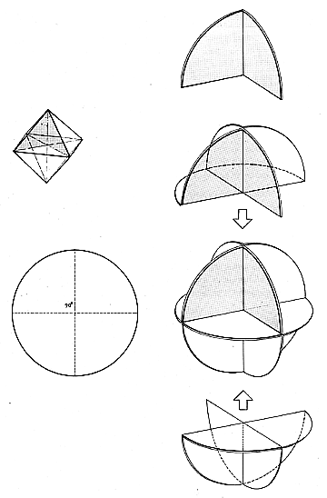

Fig. 937.20 Six-great-circle Spherical Octahedron: The doubleness of the octahedron is illustrated by the need for two sets of three great circles to produce its spherical foldable form.
Copyright © 1997 Estate of R. Buckminster Fuller